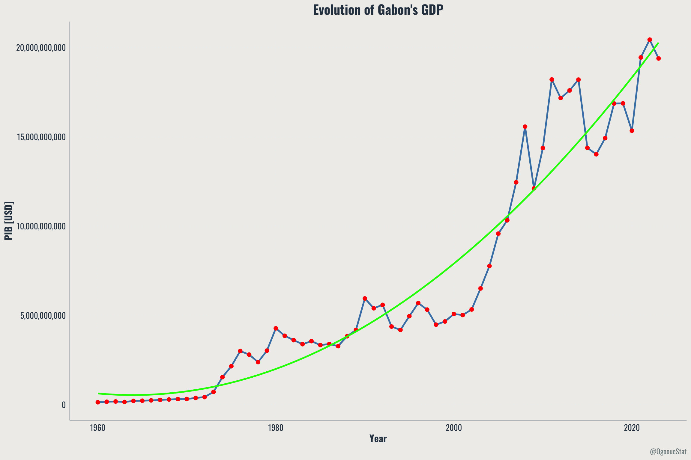
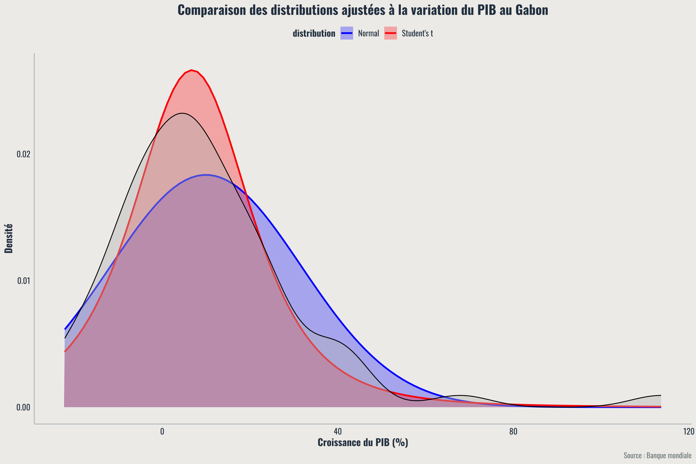

L’économie du Gabon face aux défis du XXIe siècle
Une richesse naturelle indéniable, une croissance à consolider
Situé sur la côte ouest de l’Afrique centrale, le Gabon possède une économie modeste en taille mais riche en ressources naturelles. Depuis plusieurs décennies, la croissance du produit intérieur brut (PIB) du pays repose en grande partie sur son secteur pétrolier. Le pétrole représente une part majeure des recettes publiques et des exportations.
Outre l’or noir, le pays dispose d’autres ressources stratégiques telles que le manganèse, le bois et certains produits agricoles. Mais cette richesse naturelle ne suffit pas à garantir une croissance durable, et les fluctuations du marché mondial ont souvent fait tanguer l’économie gabonaise.
Des années de croissance en dents de scie
L’évolution du PIB gabonais depuis les années 1960 reflète les hauts et les bas du secteur pétrolier. Le pays a connu une croissance rapide dans les années 1970 et 1980, portée par les premières grandes exploitations pétrolières. Mais cette dynamique a ralenti au fil des décennies, en raison de la volatilité des prix du brut et d’une faible diversification économique.
Au-delà des taux de croissance eux-mêmes, l’analyse des variations montre également une forme d’instabilité structurelle. Certains pics ou reculs marqués indiquent que l’économie manque de moteurs internes solides pour amortir les chocs externes.
Des ressources, mais une distribution inégale
Malgré un PIB par habitant relativement élevé comparé à d’autres pays africains, les inégalités de revenus restent importantes au Gabon. Une partie significative de la population n’a pas encore accès aux retombées économiques issues des ressources naturelles.
Par ailleurs, l’industrialisation hors pétrole reste limitée. Le développement d’autres secteurs comme l’agriculture, le tourisme ou les services reste encore embryonnaire.
Vers une sortie de dépendance ?
Des efforts sont en cours pour diversifier l’économie. Le gouvernement a initié plusieurs réformes visant à renforcer le secteur non pétrolier. Mais les résultats restent pour l’instant modestes, et le chemin vers une économie plus résiliente semble encore long.
Que nous disent les données sur les perspectives à venir ?
À partir de modèles statistiques appliqués aux données historiques du PIB, il est possible de simuler différents scénarios de croissance. Ces projections ne sont pas des prédictions certaines, mais elles permettent d’explorer des tendances probables à moyen terme.

L’analyse statistique montre que les variations du PIB suivent une distribution marquée, souvent mieux expliquée par un modèle de Student que par une loi normale classique. Cela reflète l’instabilité des cycles économiques gabonais.
Et si l’on se projette dans l’avenir ?
En simulant plusieurs années de croissance à partir des modèles ajustés, il est possible de visualiser le PIB attendu entre 2024 et 2028. Cette projection montre à quoi pourrait ressembler l’évolution économique si les tendances passées se poursuivaient.
Les projections suggèrent une reprise progressive, avec des taux de croissance modérés. Toutefois, ces chiffres reposent sur l’hypothèse d’une relative stabilité des prix du pétrole et d’un contexte économique mondial sans choc majeur.
Conclusion
L’économie gabonaise est à un carrefour. Riche en ressources naturelles, le pays a connu des périodes de forte croissance. Mais cette richesse s’est accompagnée d’une forte dépendance au pétrole, exposant le pays aux aléas du marché mondial.
Pour construire un avenir plus stable et inclusif, la diversification de l’économie apparaît comme une priorité. Cela suppose des investissements dans d’autres secteurs, mais aussi une meilleure répartition des richesses.
Les données montrent que des marges de progression existent. Reste à transformer les intentions politiques en actions concrètes.
- A propos des auteurs
-
LabInc est une entreprise innovante qui se spécialise dans le développement de solutions technologiques avancées, avec un accent particulier sur l’intelligence artificielle et l’analyse de données.
-
OgooueStat est un think tank indépendant basé au Gabon, spécialisé dans l’analyse des politiques publiques, la recherche économique et la statistique environnementale. Notre mission est d’orienter les décisions politiques et de soutenir le développement durable à travers des études rigoureuses et des recommandations fondées sur des données probantes.
- Copyright and licence
-
© 2024 Ogoouee Stat

 This article is licensed under a Creative Commons Attribution 4.0 (CC BY 4.0) International licence. Thumbnail photo by Lukas Blazek on Unsplash.
This article is licensed under a Creative Commons Attribution 4.0 (CC BY 4.0) International licence. Thumbnail photo by Lukas Blazek on Unsplash.
- How to cite
-
LabInc, Ogooue Stat. “Economy du Gabon, evolution et perspectives” LIOS, Mars 29, 2024.